Let  and let
and let  be an accumulation point of
be an accumulation point of
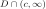
. One writes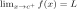
, the right-hand limit, if for every there is
there is  with
with 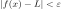
for every satisfying
satisfying
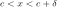
. The left-hand limit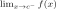
is defined symmetrically, on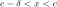
.
Let be an accumulation point of  from both sides. Then
from both sides. Then
 if and only if both one-sided limits exist
and equal
if and only if both one-sided limits exist
and equal  .
.
If the two-sided limit is , the  it supplies works for
each side, since each side's condition is a restriction of
it supplies works for
each side, since each side's condition is a restriction of
 . Conversely, given take
. Conversely, given take
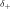
and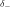
from the two one-sided limits and put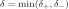
. Any with
lies strictly on one side of , so it
satisfies that side's estimate.
with
lies strictly on one side of , so it
satisfies that side's estimate.
Let  be increasing. Then both one-sided limits
exist at every
be increasing. Then both one-sided limits
exist at every  , and
, and
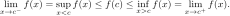
The set
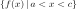
is non-empty and bounded above by , so
, so 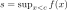
exists by completeness and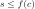
. Let. By the characterisation of the
supremum there is 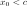
with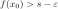
, and for every with 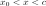
monotonicity gives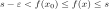
. Taking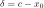
shows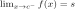
. The right-hand statement is the same argument applied to the infimum.
An increasing is continuous at if and
only if
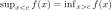
. Every discontinuity of is thus a jump: both one-sided limits exist and differ.
is thus a jump: both one-sided limits exist and differ.
By the theorem the two one-sided limits exist and are the stated
supremum and infimum, and they bracket . By the proposition,
continuity at is the existence of the two-sided limit together
with its equalling , which happens exactly when the two agree
– and then, being squeezed around , they agree with it.
The corollary is the reason a monotone function has at most countably
many discontinuities: each jump contains a distinct rational, and the
rationals are countable. That argument needs the density of the
rationals and nothing else about , which is a fair summary of how
much structure monotonicity alone carries.